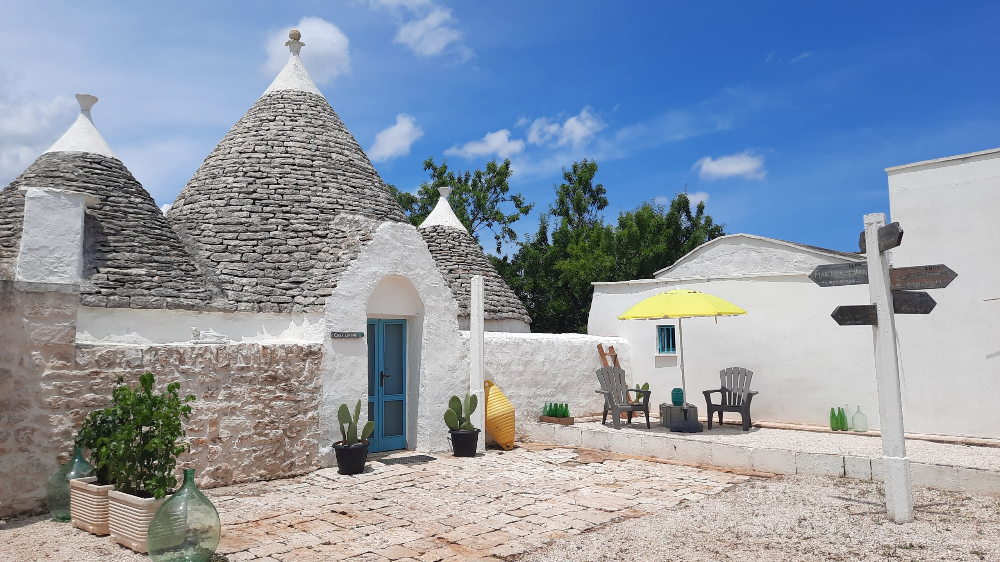

€420.000
Ceglie Messapica countryside · Puglia · Italy
Exact Puglia brief: conical trulli with exposed dry-stone, barrel-vaulted lamia, and old-mixed-with-new courtyard living around a built private plunge pool among centuries-old olives - habitable now, not a project or possibilità piscina.
Opened 25 Sep 2026 on Apulia Houses; asking €420.000; ref. CM538ZA. Complex of five-cone trullo (living, bath, alcove bed) + barrel-vault lamia + ancient stone house + villa wing with fireplace/pizza oven + separate furnished apartment. Land ~22.000 m². Outdoor dining, ancient stone oven, covered veranda, and built plunge pool verified in gallery (plungepool-2.jpg / plungepool-3-scaled.jpg). Distinct from board Apulia OS551/OS580/CA542/FF527/OS563/SV592/SV570.
Open listing